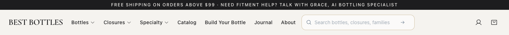
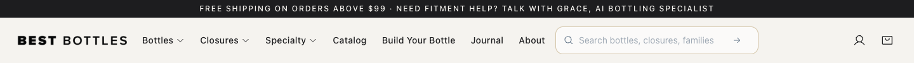
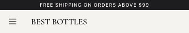
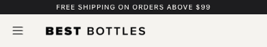

Best Bottles · Your new header logo
The supplied PNG is unchanged. The header frames its visible lettering and links back home.
Open the website →
Desktop
Both views captured at 1440 pixels wide and displayed at the same zoom.
Before
After
Mobile
Both views captured at 390 pixels wide and displayed at the same zoom.
Before
After